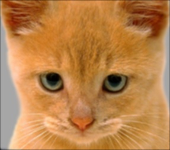
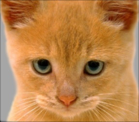

|  |  |
|||
| Blur Image | Large Blur Image | Sobel Image | Laplacian Image | High Pass Image |
| Blur Image | Large Blur Image | Sobel Image | Laplacian Image | High Pass Image |
Hybrid Image
First of all I pad the input image with zeros on both the dimensions. The number of padded zeros on each dimension is half the size of the filter in that dimension.
x = floor(size(filter,1)/2);
y = floor(size(filter,2)/2);
image = padarray(image,[x,y]);
Next I iterate over all the 3 dimensions of the input image and element-wise multiply a block of the image of size [2x+1,2y+1] with the filter.
for i = 1:Size(1)
for j = 1:Size(2)
for k = 1:Size(3)
pos = image(i:i+2*x,j:j+2*y,k) .* filter;
output(i,j,k) = sum(pos(:));
end
end
end
|  | |
|||
| Blur Image | Large Blur Image | Sobel Image | Laplacian Image | High Pass Image |
| Blur Image | Large Blur Image | Sobel Image | Laplacian Image | High Pass Image |
| Low Frequency | High Frequency | Hybrid Image |
 |
||
| Low Frequency | High Frequency | Hybrid Image |
I'm using 2D filtering as I found it to be a bit faster than 2 1D filtering, mostly because we have small and less number of images. I found cut-off frequency = 5 to give better results for the image pairs I chose. I'm filtering the 3 color channels using a for loop and storing the values in a 3D array instead of doing the filtering separately and concatenating the 3 channels.